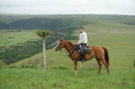

Animal Domestication & Horseback Travel
Era: 4000 BCE – onward
The domestication of animals revolutionized travel and labor. Horses, camels, and oxen allowed humans to move faster, transport goods, and expand trade routes. Horseback riding became essential for communication, warfare, and exploration.
Type: Early Animal-Based Transport